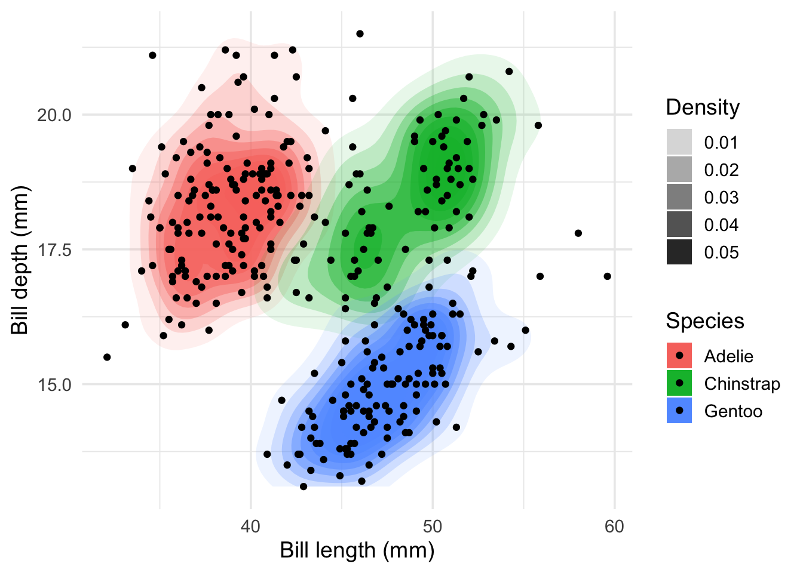
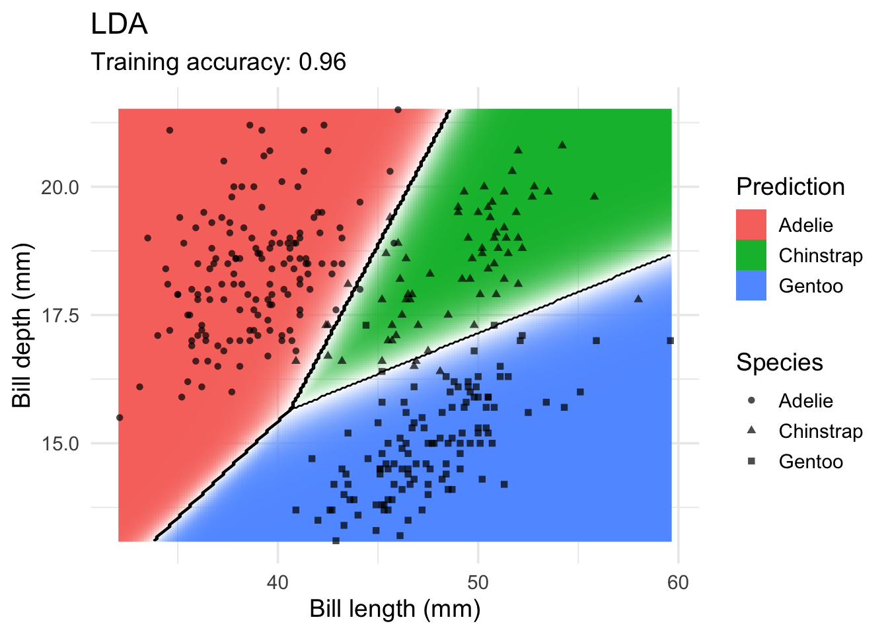
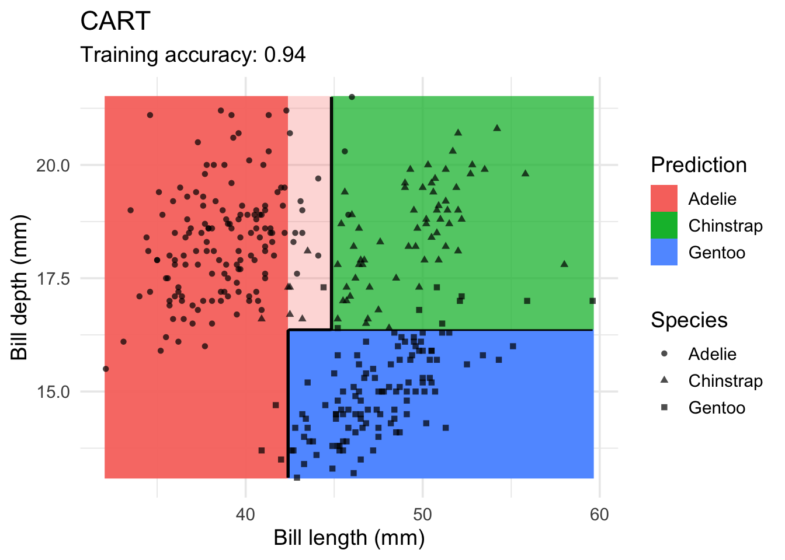
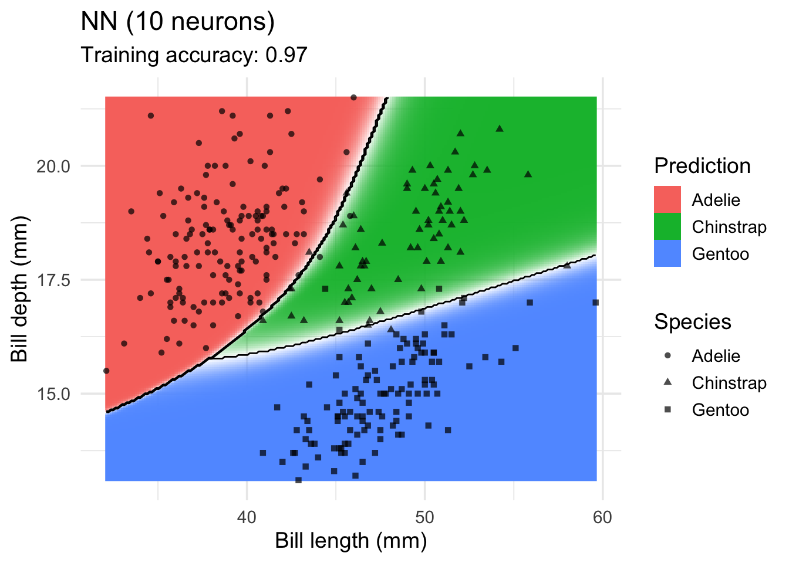
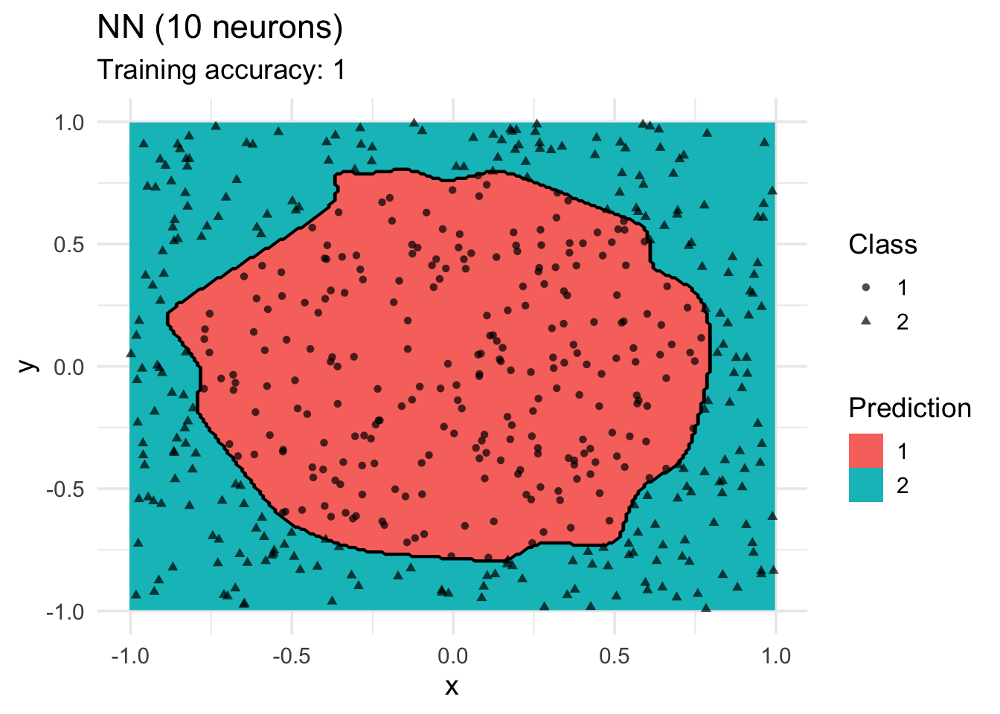

if(!require(pacman))
install.packages("pacman")Loading required package: pacmanpacman::p_load(tidyverse, rpart, rpart.plot, caret,
lattice, FSelector, sampling, pROC, mlbench)if(!require(pacman))
install.packages("pacman")Loading required package: pacmanpacman::p_load(tidyverse, rpart, rpart.plot, caret,
lattice, FSelector, sampling, pROC, mlbench)data(Zoo, package="mlbench")
head(Zoo) hair feathers eggs milk airborne aquatic predator toothed backbone
aardvark TRUE FALSE FALSE TRUE FALSE FALSE TRUE TRUE TRUE
antelope TRUE FALSE FALSE TRUE FALSE FALSE FALSE TRUE TRUE
bass FALSE FALSE TRUE FALSE FALSE TRUE TRUE TRUE TRUE
bear TRUE FALSE FALSE TRUE FALSE FALSE TRUE TRUE TRUE
boar TRUE FALSE FALSE TRUE FALSE FALSE TRUE TRUE TRUE
buffalo TRUE FALSE FALSE TRUE FALSE FALSE FALSE TRUE TRUE
breathes venomous fins legs tail domestic catsize type
aardvark TRUE FALSE FALSE 4 FALSE FALSE TRUE mammal
antelope TRUE FALSE FALSE 4 TRUE FALSE TRUE mammal
bass FALSE FALSE TRUE 0 TRUE FALSE FALSE fish
bear TRUE FALSE FALSE 4 FALSE FALSE TRUE mammal
boar TRUE FALSE FALSE 4 TRUE FALSE TRUE mammal
buffalo TRUE FALSE FALSE 4 TRUE FALSE TRUE mammallibrary(tidyverse)
as_tibble(Zoo, rownames = "animal")# A tibble: 101 × 18
animal hair feathers eggs milk airborne aquatic predator toothed backbone
<chr> <lgl> <lgl> <lgl> <lgl> <lgl> <lgl> <lgl> <lgl> <lgl>
1 aardva… TRUE FALSE FALSE TRUE FALSE FALSE TRUE TRUE TRUE
2 antelo… TRUE FALSE FALSE TRUE FALSE FALSE FALSE TRUE TRUE
3 bass FALSE FALSE TRUE FALSE FALSE TRUE TRUE TRUE TRUE
4 bear TRUE FALSE FALSE TRUE FALSE FALSE TRUE TRUE TRUE
5 boar TRUE FALSE FALSE TRUE FALSE FALSE TRUE TRUE TRUE
6 buffalo TRUE FALSE FALSE TRUE FALSE FALSE FALSE TRUE TRUE
7 calf TRUE FALSE FALSE TRUE FALSE FALSE FALSE TRUE TRUE
8 carp FALSE FALSE TRUE FALSE FALSE TRUE FALSE TRUE TRUE
9 catfish FALSE FALSE TRUE FALSE FALSE TRUE TRUE TRUE TRUE
10 cavy TRUE FALSE FALSE TRUE FALSE FALSE FALSE TRUE TRUE
# ℹ 91 more rows
# ℹ 8 more variables: breathes <lgl>, venomous <lgl>, fins <lgl>, legs <int>,
# tail <lgl>, domestic <lgl>, catsize <lgl>, type <fct>Zoo <- Zoo |>
mutate(across(where(is.logical), factor, levels = c(TRUE, FALSE))) |>
mutate(across(where(is.character), factor))Warning: There was 1 warning in `mutate()`.
ℹ In argument: `across(where(is.logical), factor, levels = c(TRUE, FALSE))`.
Caused by warning:
! The `...` argument of `across()` is deprecated as of dplyr 1.1.0.
Supply arguments directly to `.fns` through an anonymous function instead.
# Previously
across(a:b, mean, na.rm = TRUE)
# Now
across(a:b, \(x) mean(x, na.rm = TRUE))summary(Zoo) hair feathers eggs milk airborne aquatic predator
TRUE :43 TRUE :20 TRUE :59 TRUE :41 TRUE :24 TRUE :36 TRUE :56
FALSE:58 FALSE:81 FALSE:42 FALSE:60 FALSE:77 FALSE:65 FALSE:45
toothed backbone breathes venomous fins legs
TRUE :61 TRUE :83 TRUE :80 TRUE : 8 TRUE :17 Min. :0.000
FALSE:40 FALSE:18 FALSE:21 FALSE:93 FALSE:84 1st Qu.:2.000
Median :4.000
Mean :2.842
3rd Qu.:4.000
Max. :8.000
tail domestic catsize type
TRUE :75 TRUE :13 TRUE :44 mammal :41
FALSE:26 FALSE:88 FALSE:57 bird :20
reptile : 5
fish :13
amphibian : 4
insect : 8
mollusc.et.al:10 library(rpart)tree_default <- Zoo |>
rpart(type ~ ., data = _)
tree_defaultn= 101
node), split, n, loss, yval, (yprob)
* denotes terminal node
1) root 101 60 mammal (0.41 0.2 0.05 0.13 0.04 0.079 0.099)
2) milk=TRUE 41 0 mammal (1 0 0 0 0 0 0) *
3) milk=FALSE 60 40 bird (0 0.33 0.083 0.22 0.067 0.13 0.17)
6) feathers=TRUE 20 0 bird (0 1 0 0 0 0 0) *
7) feathers=FALSE 40 27 fish (0 0 0.12 0.33 0.1 0.2 0.25)
14) fins=TRUE 13 0 fish (0 0 0 1 0 0 0) *
15) fins=FALSE 27 17 mollusc.et.al (0 0 0.19 0 0.15 0.3 0.37)
30) backbone=TRUE 9 4 reptile (0 0 0.56 0 0.44 0 0) *
31) backbone=FALSE 18 8 mollusc.et.al (0 0 0 0 0 0.44 0.56) *Plotting
library(rpart.plot)
rpart.plot(tree_default, extra = 2)tree_full <- Zoo |>
rpart(type ~ . , data = _,
control = rpart.control(minsplit = 2, cp = 0))
rpart.plot(tree_full, extra = 2,
roundint=FALSE,
box.palette = list("Gy", "Gn", "Bu", "Bn",
"Or", "Rd", "Pu")) # specify 7 colorstree_fulln= 101
node), split, n, loss, yval, (yprob)
* denotes terminal node
1) root 101 60 mammal (0.41 0.2 0.05 0.13 0.04 0.079 0.099)
2) milk=TRUE 41 0 mammal (1 0 0 0 0 0 0) *
3) milk=FALSE 60 40 bird (0 0.33 0.083 0.22 0.067 0.13 0.17)
6) feathers=TRUE 20 0 bird (0 1 0 0 0 0 0) *
7) feathers=FALSE 40 27 fish (0 0 0.12 0.33 0.1 0.2 0.25)
14) fins=TRUE 13 0 fish (0 0 0 1 0 0 0) *
15) fins=FALSE 27 17 mollusc.et.al (0 0 0.19 0 0.15 0.3 0.37)
30) backbone=TRUE 9 4 reptile (0 0 0.56 0 0.44 0 0)
60) aquatic=FALSE 4 0 reptile (0 0 1 0 0 0 0) *
61) aquatic=TRUE 5 1 amphibian (0 0 0.2 0 0.8 0 0)
122) eggs=FALSE 1 0 reptile (0 0 1 0 0 0 0) *
123) eggs=TRUE 4 0 amphibian (0 0 0 0 1 0 0) *
31) backbone=FALSE 18 8 mollusc.et.al (0 0 0 0 0 0.44 0.56)
62) airborne=TRUE 6 0 insect (0 0 0 0 0 1 0) *
63) airborne=FALSE 12 2 mollusc.et.al (0 0 0 0 0 0.17 0.83)
126) predator=FALSE 4 2 insect (0 0 0 0 0 0.5 0.5)
252) legs>=3 2 0 insect (0 0 0 0 0 1 0) *
253) legs< 3 2 0 mollusc.et.al (0 0 0 0 0 0 1) *
127) predator=TRUE 8 0 mollusc.et.al (0 0 0 0 0 0 1) *Training error on tree with pre-pruning
predict(tree_default, Zoo) |> head () mammal bird reptile fish amphibian insect mollusc.et.al
aardvark 1 0 0 0 0 0 0
antelope 1 0 0 0 0 0 0
bass 0 0 0 1 0 0 0
bear 1 0 0 0 0 0 0
boar 1 0 0 0 0 0 0
buffalo 1 0 0 0 0 0 0pred <- predict(tree_default, Zoo, type="class")
head(pred)aardvark antelope bass bear boar buffalo
mammal mammal fish mammal mammal mammal
Levels: mammal bird reptile fish amphibian insect mollusc.et.alconfusion_table <- with(Zoo, table(type, pred))
confusion_table pred
type mammal bird reptile fish amphibian insect mollusc.et.al
mammal 41 0 0 0 0 0 0
bird 0 20 0 0 0 0 0
reptile 0 0 5 0 0 0 0
fish 0 0 0 13 0 0 0
amphibian 0 0 4 0 0 0 0
insect 0 0 0 0 0 0 8
mollusc.et.al 0 0 0 0 0 0 10correct <- confusion_table |> diag() |> sum()
correct[1] 89error <- confusion_table |> sum() - correct
error[1] 12accuracy <- correct / (correct + error)
accuracy[1] 0.8811881Use a function for accuracy
accuracy <- function(truth, prediction) {
tbl <- table(truth, prediction)
sum(diag(tbl))/sum(tbl)
}
accuracy(Zoo |> pull(type), pred)[1] 0.8811881Training error of the full tree
accuracy(Zoo |> pull(type),
predict(tree_full, Zoo, type = "class"))[1] 1Get a confusion table with more statistics (using caret)
library(caret)
confusionMatrix(data = pred,
reference = Zoo |> pull(type))Confusion Matrix and Statistics
Reference
Prediction mammal bird reptile fish amphibian insect mollusc.et.al
mammal 41 0 0 0 0 0 0
bird 0 20 0 0 0 0 0
reptile 0 0 5 0 4 0 0
fish 0 0 0 13 0 0 0
amphibian 0 0 0 0 0 0 0
insect 0 0 0 0 0 0 0
mollusc.et.al 0 0 0 0 0 8 10
Overall Statistics
Accuracy : 0.8812
95% CI : (0.8017, 0.9371)
No Information Rate : 0.4059
P-Value [Acc > NIR] : < 2.2e-16
Kappa : 0.8431
Mcnemar's Test P-Value : NA
Statistics by Class:
Class: mammal Class: bird Class: reptile Class: fish
Sensitivity 1.0000 1.000 1.00000 1.0000
Specificity 1.0000 1.000 0.95833 1.0000
Pos Pred Value 1.0000 1.000 0.55556 1.0000
Neg Pred Value 1.0000 1.000 1.00000 1.0000
Prevalence 0.4059 0.198 0.04950 0.1287
Detection Rate 0.4059 0.198 0.04950 0.1287
Detection Prevalence 0.4059 0.198 0.08911 0.1287
Balanced Accuracy 1.0000 1.000 0.97917 1.0000
Class: amphibian Class: insect Class: mollusc.et.al
Sensitivity 0.0000 0.00000 1.00000
Specificity 1.0000 1.00000 0.91209
Pos Pred Value NaN NaN 0.55556
Neg Pred Value 0.9604 0.92079 1.00000
Prevalence 0.0396 0.07921 0.09901
Detection Rate 0.0000 0.00000 0.09901
Detection Prevalence 0.0000 0.00000 0.17822
Balanced Accuracy 0.5000 0.50000 0.95604my_animal <- tibble(hair = TRUE, feathers = TRUE, eggs = FALSE,
milk = TRUE, airborne = TRUE, aquatic = FALSE, predator = TRUE,
toothed = TRUE, backbone = TRUE, breathes = TRUE, venomous = FALSE,
fins = FALSE, legs = 4, tail = TRUE, domestic = FALSE,
catsize = FALSE, type = NA)my_animal <- my_animal |>
mutate(across(where(is.logical), factor, levels = c(TRUE, FALSE)))
my_animal# A tibble: 1 × 17
hair feathers eggs milk airborne aquatic predator toothed backbone breathes
<fct> <fct> <fct> <fct> <fct> <fct> <fct> <fct> <fct> <fct>
1 TRUE TRUE FALSE TRUE TRUE FALSE TRUE TRUE TRUE TRUE
# ℹ 7 more variables: venomous <fct>, fins <fct>, legs <dbl>, tail <fct>,
# domestic <fct>, catsize <fct>, type <fct>predict(tree_default , my_animal, type = "class") 1
mammal
Levels: mammal bird reptile fish amphibian insect mollusc.et.allibrary(caret)Set random number generator seed to make results reproducible
set.seed(2000)inTrain <- createDataPartition(y = Zoo$type, p = .8, list = FALSE)
Zoo_train <- Zoo |> slice(inTrain)Warning: Slicing with a 1-column matrix was deprecated in dplyr 1.1.0.Zoo_test <- Zoo |> slice(-inTrain)fit <- Zoo_train |>
train(type ~ .,
data = _ ,
method = "rpart",
control = rpart.control(minsplit = 2),
trControl = trainControl(method = "cv", number = 10),
tuneLength = 5)
fitCART
83 samples
16 predictors
7 classes: 'mammal', 'bird', 'reptile', 'fish', 'amphibian', 'insect', 'mollusc.et.al'
No pre-processing
Resampling: Cross-Validated (10 fold)
Summary of sample sizes: 77, 74, 75, 73, 74, 76, ...
Resampling results across tuning parameters:
cp Accuracy Kappa
0.00 0.9384921 0.9188571
0.08 0.8973810 0.8681837
0.16 0.7447619 0.6637060
0.22 0.6663095 0.5540490
0.32 0.4735317 0.1900043
Accuracy was used to select the optimal model using the largest value.
The final value used for the model was cp = 0.rpart.plot(fit$finalModel, extra = 2,
box.palette = list("Gy", "Gn", "Bu", "Bn", "Or", "Rd", "Pu"))varImp(fit)rpart variable importance
Overall
toothedFALSE 100.000
feathersFALSE 69.814
backboneFALSE 63.084
milkFALSE 55.555
eggsFALSE 53.614
hairFALSE 50.518
finsFALSE 46.984
tailFALSE 28.447
breathesFALSE 28.128
airborneFALSE 26.272
legs 25.859
aquaticFALSE 5.960
predatorFALSE 2.349
venomousFALSE 1.387
catsizeFALSE 0.000
domesticFALSE 0.000imp <- varImp(fit, compete = FALSE)
imprpart variable importance
Overall
milkFALSE 100.000
feathersFALSE 55.694
finsFALSE 39.453
toothedFALSE 22.956
airborneFALSE 22.478
aquaticFALSE 9.987
eggsFALSE 6.658
legs 5.549
predatorFALSE 1.850
domesticFALSE 0.000
breathesFALSE 0.000
catsizeFALSE 0.000
tailFALSE 0.000
hairFALSE 0.000
backboneFALSE 0.000
venomousFALSE 0.000ggplot(imp)Use the best model on the test data
pred <- predict(fit, newdata = Zoo_test)
pred [1] mammal mammal mollusc.et.al insect mammal
[6] mammal mammal bird mammal mammal
[11] bird fish fish mammal mollusc.et.al
[16] bird insect bird
Levels: mammal bird reptile fish amphibian insect mollusc.et.alconfusionMatrix(data = pred,
ref = Zoo_test |> pull(type))Confusion Matrix and Statistics
Reference
Prediction mammal bird reptile fish amphibian insect mollusc.et.al
mammal 8 0 0 0 0 0 0
bird 0 4 0 0 0 0 0
reptile 0 0 0 0 0 0 0
fish 0 0 0 2 0 0 0
amphibian 0 0 0 0 0 0 0
insect 0 0 1 0 0 1 0
mollusc.et.al 0 0 0 0 0 0 2
Overall Statistics
Accuracy : 0.9444
95% CI : (0.7271, 0.9986)
No Information Rate : 0.4444
P-Value [Acc > NIR] : 1.076e-05
Kappa : 0.9231
Mcnemar's Test P-Value : NA
Statistics by Class:
Class: mammal Class: bird Class: reptile Class: fish
Sensitivity 1.0000 1.0000 0.00000 1.0000
Specificity 1.0000 1.0000 1.00000 1.0000
Pos Pred Value 1.0000 1.0000 NaN 1.0000
Neg Pred Value 1.0000 1.0000 0.94444 1.0000
Prevalence 0.4444 0.2222 0.05556 0.1111
Detection Rate 0.4444 0.2222 0.00000 0.1111
Detection Prevalence 0.4444 0.2222 0.00000 0.1111
Balanced Accuracy 1.0000 1.0000 0.50000 1.0000
Class: amphibian Class: insect Class: mollusc.et.al
Sensitivity NA 1.00000 1.0000
Specificity 1 0.94118 1.0000
Pos Pred Value NA 0.50000 1.0000
Neg Pred Value NA 1.00000 1.0000
Prevalence 0 0.05556 0.1111
Detection Rate 0 0.05556 0.1111
Detection Prevalence 0 0.11111 0.1111
Balanced Accuracy NA 0.97059 1.0000train_index <- createFolds(Zoo_train$type, k = 10)rpartFit <- Zoo_train |>
train(type ~ .,
data = _,
method = "rpart",
tuneLength = 10,
trControl = trainControl(method = "cv", indexOut = train_index)
)knnFit <- Zoo_train |>
train(type ~ .,
data = _,
method = "knn",
preProcess = "scale",
tuneLength = 10,
trControl = trainControl(method = "cv", indexOut = train_index)
)resamps <- resamples(list(
CART = rpartFit,
kNearestNeighbors = knnFit
))
summary(resamps)
Call:
summary.resamples(object = resamps)
Models: CART, kNearestNeighbors
Number of resamples: 10
Accuracy
Min. 1st Qu. Median Mean 3rd Qu. Max. NA's
CART 0.6666667 0.8750000 0.8888889 0.8722222 0.8888889 1 0
kNearestNeighbors 0.8750000 0.9166667 1.0000000 0.9652778 1.0000000 1 0
Kappa
Min. 1st Qu. Median Mean 3rd Qu. Max. NA's
CART 0.5909091 0.8333333 0.8474576 0.8341866 0.8570312 1 0
kNearestNeighbors 0.8333333 0.8977273 1.0000000 0.9546970 1.0000000 1 0library(lattice)
bwplot(resamps, layout = c(3, 1))difs <- diff(resamps)
difs
Call:
diff.resamples(x = resamps)
Models: CART, kNearestNeighbors
Metrics: Accuracy, Kappa
Number of differences: 1
p-value adjustment: bonferroni summary(difs)
Call:
summary.diff.resamples(object = difs)
p-value adjustment: bonferroni
Upper diagonal: estimates of the difference
Lower diagonal: p-value for H0: difference = 0
Accuracy
CART kNearestNeighbors
CART -0.09306
kNearestNeighbors 0.01151
Kappa
CART kNearestNeighbors
CART -0.1205
kNearestNeighbors 0.0104 library(FSelector)weights <- Zoo_train |>
chi.squared(type ~ ., data = _) |>
as_tibble(rownames = "feature") |>
arrange(desc(attr_importance))
weights# A tibble: 16 × 2
feature attr_importance
<chr> <dbl>
1 feathers 1
2 backbone 1
3 milk 1
4 toothed 0.975
5 eggs 0.933
6 hair 0.907
7 breathes 0.898
8 airborne 0.848
9 fins 0.845
10 legs 0.828
11 tail 0.779
12 catsize 0.664
13 aquatic 0.655
14 venomous 0.475
15 predator 0.385
16 domestic 0.231ggplot(weights,
aes(x = attr_importance, y = reorder(feature, attr_importance))) +
geom_bar(stat = "identity") +
xlab("Importance score") +
ylab("Feature")# Get the 5 best features
subset <- cutoff.k(weights |>
column_to_rownames("feature"), 5)
subset[1] "feathers" "backbone" "milk" "toothed" "eggs" # Use only the best 5 features to build a model (Fselector provides as.simple.formula)
f <- as.simple.formula(subset, "type")
ftype ~ feathers + backbone + milk + toothed + eggs
<environment: 0x13a401668>m <- Zoo_train |> rpart(f, data = _)
rpart.plot(m, extra = 2, roundint = FALSE)
Zoo_train |>
gain.ratio(type ~ ., data = _) |>
as_tibble(rownames = "feature") |>
arrange(desc(attr_importance))# A tibble: 16 × 2
feature attr_importance
<chr> <dbl>
1 backbone 1
2 milk 1.00
3 feathers 1.00
4 toothed 0.919
5 eggs 0.827
6 breathes 0.821
7 hair 0.782
8 fins 0.689
9 legs 0.682
10 airborne 0.671
11 tail 0.573
12 aquatic 0.391
13 catsize 0.383
14 venomous 0.351
15 predator 0.125
16 domestic 0.0975Zoo_train |>
cfs(type ~ ., data = _) [1] "hair" "feathers" "eggs" "milk" "toothed" "backbone"
[7] "breathes" "fins" "legs" "tail" evaluator <- function(subset) {
model <- Zoo_train |>
train(as.simple.formula(subset, "type"),
data = _,
method = "rpart",
trControl = trainControl(method = "boot", number = 5),
tuneLength = 0)
results <- model$resample$Accuracy
cat("Trying features:", paste(subset, collapse = " + "), "\n")
m <- mean(results)
cat("Accuracy:", round(m, 2), "\n\n")
m
}features <- Zoo_train |> colnames() |> setdiff("type")##subset <- backward.search(features, evaluator)
##subset <- forward.search(features, evaluator)
##subset <- best.first.search(features, evaluator)
##subset <- hill.climbing.search(features, evaluator)
##subsettree_predator <- Zoo_train |>
rpart(predator ~ type, data = _)
rpart.plot(tree_predator, extra = 2, roundint = FALSE)Zoo_train_dummy <- as_tibble(class2ind(Zoo_train$type)) |>
mutate(across(everything(), as.factor)) |>
add_column(predator = Zoo_train$predator)
Zoo_train_dummy# A tibble: 83 × 8
mammal bird reptile fish amphibian insect mollusc.et.al predator
<fct> <fct> <fct> <fct> <fct> <fct> <fct> <fct>
1 1 0 0 0 0 0 0 TRUE
2 1 0 0 0 0 0 0 FALSE
3 0 0 0 1 0 0 0 TRUE
4 1 0 0 0 0 0 0 TRUE
5 1 0 0 0 0 0 0 FALSE
6 1 0 0 0 0 0 0 FALSE
7 0 0 0 1 0 0 0 FALSE
8 0 0 0 1 0 0 0 TRUE
9 1 0 0 0 0 0 0 FALSE
10 0 1 0 0 0 0 0 FALSE
# ℹ 73 more rowstree_predator <- Zoo_train_dummy |>
rpart(predator ~ .,
data = _,
control = rpart.control(minsplit = 2, cp = 0.01))
rpart.plot(tree_predator, roundint = FALSE)fit <- Zoo_train |>
train(predator ~ type,
data = _,
method = "rpart",
control = rpart.control(minsplit = 2),
tuneGrid = data.frame(cp = 0.01))
fitCART
83 samples
1 predictor
2 classes: 'TRUE', 'FALSE'
No pre-processing
Resampling: Bootstrapped (25 reps)
Summary of sample sizes: 83, 83, 83, 83, 83, 83, ...
Resampling results:
Accuracy Kappa
0.6060423 0.2034198
Tuning parameter 'cp' was held constant at a value of 0.01rpart.plot(fit$finalModel, extra = 2)library(rpart)
library(rpart.plot)
data(Zoo, package="mlbench")#Class distribution
ggplot(Zoo, aes(y = type)) + geom_bar()Zoo_reptile <- Zoo |>
mutate(type = factor(Zoo$type == "reptile",
levels = c(FALSE, TRUE),
labels = c("nonreptile", "reptile")))summary(Zoo_reptile) hair feathers eggs milk
Mode :logical Mode :logical Mode :logical Mode :logical
FALSE:58 FALSE:81 FALSE:42 FALSE:60
TRUE :43 TRUE :20 TRUE :59 TRUE :41
airborne aquatic predator toothed
Mode :logical Mode :logical Mode :logical Mode :logical
FALSE:77 FALSE:65 FALSE:45 FALSE:40
TRUE :24 TRUE :36 TRUE :56 TRUE :61
backbone breathes venomous fins
Mode :logical Mode :logical Mode :logical Mode :logical
FALSE:18 FALSE:21 FALSE:93 FALSE:84
TRUE :83 TRUE :80 TRUE :8 TRUE :17
legs tail domestic catsize
Min. :0.000 Mode :logical Mode :logical Mode :logical
1st Qu.:2.000 FALSE:26 FALSE:88 FALSE:57
Median :4.000 TRUE :75 TRUE :13 TRUE :44
Mean :2.842
3rd Qu.:4.000
Max. :8.000
type
nonreptile:96
reptile : 5
ggplot(Zoo_reptile, aes(y = type)) + geom_bar()set.seed(1234)
inTrain <- createDataPartition(y = Zoo_reptile$type, p = .5, list = FALSE)
training_reptile <- Zoo_reptile |> slice(inTrain)
testing_reptile <- Zoo_reptile |> slice(-inTrain)fit <- training_reptile |>
train(type ~ .,
data = _,
method = "rpart",
trControl = trainControl(method = "cv"))Warning in nominalTrainWorkflow(x = x, y = y, wts = weights, info = trainInfo,
: There were missing values in resampled performance measures.fitCART
51 samples
16 predictors
2 classes: 'nonreptile', 'reptile'
No pre-processing
Resampling: Cross-Validated (10 fold)
Summary of sample sizes: 46, 47, 46, 46, 45, 46, ...
Resampling results:
Accuracy Kappa
0.9466667 0
Tuning parameter 'cp' was held constant at a value of 0rpart.plot(fit$finalModel, extra = 2)confusionMatrix(data = predict(fit, testing_reptile),
ref = testing_reptile$type, positive = "reptile")Confusion Matrix and Statistics
Reference
Prediction nonreptile reptile
nonreptile 48 2
reptile 0 0
Accuracy : 0.96
95% CI : (0.8629, 0.9951)
No Information Rate : 0.96
P-Value [Acc > NIR] : 0.6767
Kappa : 0
Mcnemar's Test P-Value : 0.4795
Sensitivity : 0.00
Specificity : 1.00
Pos Pred Value : NaN
Neg Pred Value : 0.96
Prevalence : 0.04
Detection Rate : 0.00
Detection Prevalence : 0.00
Balanced Accuracy : 0.50
'Positive' Class : reptile
library(sampling)
set.seed(1000) # for repeatability
id <- strata(training_reptile, stratanames = "type", size = c(50, 50), method = "srswr")
training_reptile_balanced <- training_reptile |>
slice(id$ID_unit)
table(training_reptile_balanced$type)
nonreptile reptile
50 50 fit <- training_reptile_balanced |>
train(type ~ .,
data = _,
method = "rpart",
trControl = trainControl(method = "cv"),
control = rpart.control(minsplit = 5))
fitCART
100 samples
16 predictor
2 classes: 'nonreptile', 'reptile'
No pre-processing
Resampling: Cross-Validated (10 fold)
Summary of sample sizes: 90, 90, 90, 90, 90, 90, ...
Resampling results across tuning parameters:
cp Accuracy Kappa
0.22 0.78 0.56
0.26 0.67 0.34
0.34 0.54 0.08
Accuracy was used to select the optimal model using the largest value.
The final value used for the model was cp = 0.22.rpart.plot(fit$finalModel, extra = 2)confusionMatrix(data = predict(fit, testing_reptile),
ref = testing_reptile$type, positive = "reptile")Confusion Matrix and Statistics
Reference
Prediction nonreptile reptile
nonreptile 33 0
reptile 15 2
Accuracy : 0.7
95% CI : (0.5539, 0.8214)
No Information Rate : 0.96
P-Value [Acc > NIR] : 1.0000000
Kappa : 0.1497
Mcnemar's Test P-Value : 0.0003006
Sensitivity : 1.0000
Specificity : 0.6875
Pos Pred Value : 0.1176
Neg Pred Value : 1.0000
Prevalence : 0.0400
Detection Rate : 0.0400
Detection Prevalence : 0.3400
Balanced Accuracy : 0.8438
'Positive' Class : reptile
id <- strata(training_reptile, stratanames = "type", size = c(50, 100), method = "srswr")
training_reptile_balanced <- training_reptile |>
slice(id$ID_unit)
table(training_reptile_balanced$type)
nonreptile reptile
50 100 fit <- training_reptile_balanced |>
train(type ~ .,
data = _,
method = "rpart",
trControl = trainControl(method = "cv"),
control = rpart.control(minsplit = 5))
confusionMatrix(data = predict(fit, testing_reptile),
ref = testing_reptile$type, positive = "reptile")Confusion Matrix and Statistics
Reference
Prediction nonreptile reptile
nonreptile 33 0
reptile 15 2
Accuracy : 0.7
95% CI : (0.5539, 0.8214)
No Information Rate : 0.96
P-Value [Acc > NIR] : 1.0000000
Kappa : 0.1497
Mcnemar's Test P-Value : 0.0003006
Sensitivity : 1.0000
Specificity : 0.6875
Pos Pred Value : 0.1176
Neg Pred Value : 1.0000
Prevalence : 0.0400
Detection Rate : 0.0400
Detection Prevalence : 0.3400
Balanced Accuracy : 0.8438
'Positive' Class : reptile
fit <- training_reptile |>
train(type ~ .,
data = _,
method = "rpart",
tuneLength = 10,
trControl = trainControl(method = "cv",
classProbs = TRUE, ## necessary for predict with type="prob"
summaryFunction=twoClassSummary), ## necessary for ROC
metric = "ROC",
control = rpart.control(minsplit = 3))Warning in nominalTrainWorkflow(x = x, y = y, wts = weights, info = trainInfo,
: There were missing values in resampled performance measures.fitCART
51 samples
16 predictors
2 classes: 'nonreptile', 'reptile'
No pre-processing
Resampling: Cross-Validated (10 fold)
Summary of sample sizes: 46, 47, 46, 46, 46, 45, ...
Resampling results:
ROC Sens Spec
0.3583333 0.975 0
Tuning parameter 'cp' was held constant at a value of 0rpart.plot(fit$finalModel, extra = 2)confusionMatrix(data = predict(fit, testing_reptile),
ref = testing_reptile$type, positive = "reptile")Confusion Matrix and Statistics
Reference
Prediction nonreptile reptile
nonreptile 48 2
reptile 0 0
Accuracy : 0.96
95% CI : (0.8629, 0.9951)
No Information Rate : 0.96
P-Value [Acc > NIR] : 0.6767
Kappa : 0
Mcnemar's Test P-Value : 0.4795
Sensitivity : 0.00
Specificity : 1.00
Pos Pred Value : NaN
Neg Pred Value : 0.96
Prevalence : 0.04
Detection Rate : 0.00
Detection Prevalence : 0.00
Balanced Accuracy : 0.50
'Positive' Class : reptile
prob <- predict(fit, testing_reptile, type = "prob")
tail(prob) nonreptile reptile
tuna 1.0000000 0.00000000
vole 0.9615385 0.03846154
wasp 0.5000000 0.50000000
wolf 0.9615385 0.03846154
worm 1.0000000 0.00000000
wren 0.9615385 0.03846154pred <- as.factor(ifelse(prob[,"reptile"]>=0.01, "reptile", "nonreptile"))
confusionMatrix(data = pred,
ref = testing_reptile$type, positive = "reptile")Confusion Matrix and Statistics
Reference
Prediction nonreptile reptile
nonreptile 13 0
reptile 35 2
Accuracy : 0.3
95% CI : (0.1786, 0.4461)
No Information Rate : 0.96
P-Value [Acc > NIR] : 1
Kappa : 0.0289
Mcnemar's Test P-Value : 9.081e-09
Sensitivity : 1.00000
Specificity : 0.27083
Pos Pred Value : 0.05405
Neg Pred Value : 1.00000
Prevalence : 0.04000
Detection Rate : 0.04000
Detection Prevalence : 0.74000
Balanced Accuracy : 0.63542
'Positive' Class : reptile
library("pROC")
r <- roc(testing_reptile$type == "reptile", prob[,"reptile"])Setting levels: control = FALSE, case = TRUESetting direction: controls < casesr
Call:
roc.default(response = testing_reptile$type == "reptile", predictor = prob[, "reptile"])
Data: prob[, "reptile"] in 48 controls (testing_reptile$type == "reptile" FALSE) < 2 cases (testing_reptile$type == "reptile" TRUE).
Area under the curve: 0.7656ggroc(r) + geom_abline(intercept = 1, slope = 1, color = "darkgrey")cost <- matrix(c(
0, 1,
100, 0
), byrow = TRUE, nrow = 2)
cost [,1] [,2]
[1,] 0 1
[2,] 100 0fit <- training_reptile |>
train(type ~ .,
data = _,
method = "rpart",
parms = list(loss = cost),
trControl = trainControl(method = "cv"))fitCART
51 samples
16 predictors
2 classes: 'nonreptile', 'reptile'
No pre-processing
Resampling: Cross-Validated (10 fold)
Summary of sample sizes: 46, 46, 46, 45, 46, 45, ...
Resampling results:
Accuracy Kappa
0.4766667 -0.03038961
Tuning parameter 'cp' was held constant at a value of 0rpart.plot(fit$finalModel, extra = 2)confusionMatrix(data = predict(fit, testing_reptile),
ref = testing_reptile$type, positive = "reptile")Confusion Matrix and Statistics
Reference
Prediction nonreptile reptile
nonreptile 39 0
reptile 9 2
Accuracy : 0.82
95% CI : (0.6856, 0.9142)
No Information Rate : 0.96
P-Value [Acc > NIR] : 0.999975
Kappa : 0.2574
Mcnemar's Test P-Value : 0.007661
Sensitivity : 1.0000
Specificity : 0.8125
Pos Pred Value : 0.1818
Neg Pred Value : 1.0000
Prevalence : 0.0400
Detection Rate : 0.0400
Detection Prevalence : 0.2200
Balanced Accuracy : 0.9062
'Positive' Class : reptile
if(!require(pacman))
install.packages("pacman")
pacman::p_load(
C50, # C5.0 Decision Trees and Rule-Based Models
caret, # Classification and Regression Training
e1071, # Misc Functions of the Department of Statistics (e1071), TU Wien
keras, # R Interface to 'Keras'
kernlab, # Kernel-Based Machine Learning Lab
lattice, # Trellis Graphics for R
MASS, # Support Functions and Datasets for Venables and Ripley's MASS
mlbench, # Machine Learning Benchmark Problems
nnet, # Feedforward Neural Networks and Multinomial Log-Linear Models
palmerpenguins, # Palmer Archipelago (Antarctica) Penguin Data
party, # A Laboratory for Recursive Partytioning
partykit, # A Toolkit for Recursive Partytioning
randomForest, # Breiman and Cutler's Random Forests for Classification and Regression
rpart, # Recursive partitioning models
RWeka, # R/Weka Interface
scales, # Scale Functions for Visualization
tidymodels, # Tidy machine learning framework
tidyverse, # Tidy data wrangling and visualization
xgboost # Extreme Gradient Boosting
)options(digits=3)data(Zoo, package="mlbench")
Zoo <- as.data.frame(Zoo)
Zoo |> glimpse()Rows: 101
Columns: 17
$ hair <lgl> TRUE, TRUE, FALSE, TRUE, TRUE, TRUE, TRUE, FALSE, FALSE, TRUE…
$ feathers <lgl> FALSE, FALSE, FALSE, FALSE, FALSE, FALSE, FALSE, FALSE, FALSE…
$ eggs <lgl> FALSE, FALSE, TRUE, FALSE, FALSE, FALSE, FALSE, TRUE, TRUE, F…
$ milk <lgl> TRUE, TRUE, FALSE, TRUE, TRUE, TRUE, TRUE, FALSE, FALSE, TRUE…
$ airborne <lgl> FALSE, FALSE, FALSE, FALSE, FALSE, FALSE, FALSE, FALSE, FALSE…
$ aquatic <lgl> FALSE, FALSE, TRUE, FALSE, FALSE, FALSE, FALSE, TRUE, TRUE, F…
$ predator <lgl> TRUE, FALSE, TRUE, TRUE, TRUE, FALSE, FALSE, FALSE, TRUE, FAL…
$ toothed <lgl> TRUE, TRUE, TRUE, TRUE, TRUE, TRUE, TRUE, TRUE, TRUE, TRUE, T…
$ backbone <lgl> TRUE, TRUE, TRUE, TRUE, TRUE, TRUE, TRUE, TRUE, TRUE, TRUE, T…
$ breathes <lgl> TRUE, TRUE, FALSE, TRUE, TRUE, TRUE, TRUE, FALSE, FALSE, TRUE…
$ venomous <lgl> FALSE, FALSE, FALSE, FALSE, FALSE, FALSE, FALSE, FALSE, FALSE…
$ fins <lgl> FALSE, FALSE, TRUE, FALSE, FALSE, FALSE, FALSE, TRUE, TRUE, F…
$ legs <int> 4, 4, 0, 4, 4, 4, 4, 0, 0, 4, 4, 2, 0, 0, 4, 6, 2, 4, 0, 0, 2…
$ tail <lgl> FALSE, TRUE, TRUE, FALSE, TRUE, TRUE, TRUE, TRUE, TRUE, FALSE…
$ domestic <lgl> FALSE, FALSE, FALSE, FALSE, FALSE, FALSE, TRUE, TRUE, FALSE, …
$ catsize <lgl> TRUE, TRUE, FALSE, TRUE, TRUE, TRUE, TRUE, FALSE, FALSE, FALS…
$ type <fct> mammal, mammal, fish, mammal, mammal, mammal, mammal, fish, f…set.seed(123) # for reproducibility
inTrain <- createDataPartition(y = Zoo$type, p = .8)[[1]]
Zoo_train <- dplyr::slice(Zoo, inTrain)
Zoo_test <- dplyr::slice(Zoo, -inTrain)train_index <- createFolds(Zoo_train$type, k = 10)ctreeFit <- Zoo_train |> train(type ~ .,
method = "ctree",
data = _,
tuneLength = 5,
trControl = trainControl(method = "cv", indexOut = train_index))
ctreeFitConditional Inference Tree
83 samples
16 predictors
7 classes: 'mammal', 'bird', 'reptile', 'fish', 'amphibian', 'insect', 'mollusc.et.al'
No pre-processing
Resampling: Cross-Validated (10 fold)
Summary of sample sizes: 76, 72, 73, 76, 75, 75, ...
Resampling results across tuning parameters:
mincriterion Accuracy Kappa
0.010 0.827 0.772
0.255 0.827 0.772
0.500 0.827 0.772
0.745 0.827 0.772
0.990 0.827 0.772
Accuracy was used to select the optimal model using the largest value.
The final value used for the model was mincriterion = 0.99.plot(ctreeFit$finalModel)C45Fit <- Zoo_train |> train(type ~ .,
method = "J48",
data = _,
tuneLength = 5,
trControl = trainControl(method = "cv", indexOut = train_index))
C45FitC4.5-like Trees
83 samples
16 predictors
7 classes: 'mammal', 'bird', 'reptile', 'fish', 'amphibian', 'insect', 'mollusc.et.al'
No pre-processing
Resampling: Cross-Validated (10 fold)
Summary of sample sizes: 76, 75, 73, 76, 74, 74, ...
Resampling results across tuning parameters:
C M Accuracy Kappa
0.010 1 0.975 0.967
0.010 2 0.965 0.954
0.010 3 0.953 0.940
0.010 4 0.959 0.948
0.010 5 0.970 0.962
0.133 1 1.000 1.000
0.133 2 0.976 0.968
0.133 3 0.965 0.954
0.133 4 0.959 0.948
0.133 5 0.970 0.962
0.255 1 1.000 1.000
0.255 2 0.976 0.968
0.255 3 0.965 0.954
0.255 4 0.959 0.948
0.255 5 0.970 0.962
0.378 1 1.000 1.000
0.378 2 0.976 0.968
0.378 3 0.965 0.954
0.378 4 0.959 0.948
0.378 5 0.970 0.962
0.500 1 1.000 1.000
0.500 2 0.976 0.968
0.500 3 0.965 0.954
0.500 4 0.959 0.948
0.500 5 0.970 0.962
Accuracy was used to select the optimal model using the largest value.
The final values used for the model were C = 0.133 and M = 1.C45Fit$finalModelJ48 pruned tree
------------------
feathersTRUE <= 0
| milkTRUE <= 0
| | backboneTRUE <= 0
| | | predatorTRUE <= 0
| | | | legs <= 2: mollusc.et.al (1.0)
| | | | legs > 2: insect (6.0)
| | | predatorTRUE > 0: mollusc.et.al (8.0/1.0)
| | backboneTRUE > 0
| | | finsTRUE <= 0
| | | | aquaticTRUE <= 0: reptile (3.0)
| | | | aquaticTRUE > 0
| | | | | eggsTRUE <= 0: reptile (1.0)
| | | | | eggsTRUE > 0: amphibian (4.0)
| | | finsTRUE > 0: fish (11.0)
| milkTRUE > 0: mammal (33.0)
feathersTRUE > 0: bird (16.0)
Number of Leaves : 9
Size of the tree : 17knnFit <- Zoo_train |> train(type ~ .,
method = "knn",
data = _,
preProcess = "scale",
tuneLength = 5,
tuneGrid=data.frame(k = 1:10),
trControl = trainControl(method = "cv", indexOut = train_index))
knnFitk-Nearest Neighbors
83 samples
16 predictors
7 classes: 'mammal', 'bird', 'reptile', 'fish', 'amphibian', 'insect', 'mollusc.et.al'
Pre-processing: scaled (16)
Resampling: Cross-Validated (10 fold)
Summary of sample sizes: 77, 74, 75, 75, 74, 74, ...
Resampling results across tuning parameters:
k Accuracy Kappa
1 1.000 1.000
2 0.965 0.954
3 0.963 0.951
4 0.942 0.925
5 0.941 0.921
6 0.963 0.951
7 0.963 0.951
8 0.941 0.921
9 0.908 0.883
10 0.918 0.892
Accuracy was used to select the optimal model using the largest value.
The final value used for the model was k = 1.knnFit$finalModel1-nearest neighbor model
Training set outcome distribution:
mammal bird reptile fish amphibian
33 16 4 11 4
insect mollusc.et.al
7 8 rulesFit <- Zoo_train |> train(type ~ .,
method = "PART",
data = _,
tuneLength = 5,
trControl = trainControl(method = "cv", indexOut = train_index))
rulesFitRule-Based Classifier
83 samples
16 predictors
7 classes: 'mammal', 'bird', 'reptile', 'fish', 'amphibian', 'insect', 'mollusc.et.al'
No pre-processing
Resampling: Cross-Validated (10 fold)
Summary of sample sizes: 73, 74, 76, 76, 75, 74, ...
Resampling results across tuning parameters:
threshold pruned Accuracy Kappa
0.010 yes 0.979 0.973
0.010 no 0.979 0.973
0.133 yes 0.990 0.987
0.133 no 0.979 0.973
0.255 yes 0.990 0.987
0.255 no 0.979 0.973
0.378 yes 0.990 0.987
0.378 no 0.979 0.973
0.500 yes 0.990 0.987
0.500 no 0.979 0.973
Accuracy was used to select the optimal model using the largest value.
The final values used for the model were threshold = 0.5 and pruned = yes.rulesFit$finalModelPART decision list
------------------
feathersTRUE <= 0 AND
milkTRUE > 0: mammal (33.0)
feathersTRUE > 0: bird (16.0)
backboneTRUE <= 0 AND
airborneTRUE <= 0 AND
predatorTRUE > 0: mollusc.et.al (7.0)
backboneTRUE > 0 AND
finsTRUE > 0: fish (11.0)
backboneTRUE <= 0: insect (8.0/1.0)
aquaticTRUE > 0: amphibian (5.0/1.0)
: reptile (3.0)
Number of Rules : 7svmFit <- Zoo_train |> train(type ~.,
method = "svmLinear",
data = _,
tuneLength = 5,
trControl = trainControl(method = "cv", indexOut = train_index))
svmFitSupport Vector Machines with Linear Kernel
83 samples
16 predictors
7 classes: 'mammal', 'bird', 'reptile', 'fish', 'amphibian', 'insect', 'mollusc.et.al'
No pre-processing
Resampling: Cross-Validated (10 fold)
Summary of sample sizes: 74, 74, 77, 75, 74, 77, ...
Resampling results:
Accuracy Kappa
1 1
Tuning parameter 'C' was held constant at a value of 1svmFit$finalModelSupport Vector Machine object of class "ksvm"
SV type: C-svc (classification)
parameter : cost C = 1
Linear (vanilla) kernel function.
Number of Support Vectors : 39
Objective Function Value : -0.143 -0.217 -0.15 -0.175 -0.0934 -0.0974 -0.292 -0.0835 -0.154 -0.0901 -0.112 -0.189 -0.593 -0.13 -0.179 -0.122 -0.0481 -0.0838 -0.125 -0.15 -0.501
Training error : 0 randomForestFit <- Zoo_train |> train(type ~ .,
method = "rf",
data = _,
tuneLength = 5,
trControl = trainControl(method = "cv", indexOut = train_index))
randomForestFitRandom Forest
83 samples
16 predictors
7 classes: 'mammal', 'bird', 'reptile', 'fish', 'amphibian', 'insect', 'mollusc.et.al'
No pre-processing
Resampling: Cross-Validated (10 fold)
Summary of sample sizes: 75, 76, 75, 76, 74, 73, ...
Resampling results across tuning parameters:
mtry Accuracy Kappa
2 1 1
5 1 1
9 1 1
12 1 1
16 1 1
Accuracy was used to select the optimal model using the largest value.
The final value used for the model was mtry = 2.randomForestFit$finalModel
Call:
randomForest(x = x, y = y, mtry = param$mtry)
Type of random forest: classification
Number of trees: 500
No. of variables tried at each split: 2
OOB estimate of error rate: 7.23%
Confusion matrix:
mammal bird reptile fish amphibian insect mollusc.et.al
mammal 33 0 0 0 0 0 0
bird 0 16 0 0 0 0 0
reptile 0 1 0 2 1 0 0
fish 0 0 0 11 0 0 0
amphibian 0 0 0 0 4 0 0
insect 0 0 0 0 0 7 0
mollusc.et.al 1 0 0 0 0 1 6
class.error
mammal 0.00
bird 0.00
reptile 1.00
fish 0.00
amphibian 0.00
insect 0.00
mollusc.et.al 0.25xgboostFit <- Zoo_train |> train(type ~ .,
method = "xgbTree",
data = _,
tuneLength = 5,
trControl = trainControl(method = "cv", indexOut = train_index),
tuneGrid = expand.grid(
nrounds = 20,
max_depth = 3,
colsample_bytree = .6,
eta = 0.1,
gamma=0,
min_child_weight = 1,
subsample = .5
))
xgboostFiteXtreme Gradient Boosting
83 samples
16 predictors
7 classes: 'mammal', 'bird', 'reptile', 'fish', 'amphibian', 'insect', 'mollusc.et.al'
No pre-processing
Resampling: Cross-Validated (10 fold)
Summary of sample sizes: 77, 73, 74, 75, 75, 75, ...
Resampling results:
Accuracy Kappa
0.973 0.964
Tuning parameter 'nrounds' was held constant at a value of 20
Tuning
held constant at a value of 1
Tuning parameter 'subsample' was held
constant at a value of 0.5xgboostFit$finalModel##### xgb.Booster
raw: 112.4 Kb
call:
xgboost::xgb.train(params = list(eta = param$eta, max_depth = param$max_depth,
gamma = param$gamma, colsample_bytree = param$colsample_bytree,
min_child_weight = param$min_child_weight, subsample = param$subsample),
data = x, nrounds = param$nrounds, num_class = length(lev),
objective = "multi:softprob")
params (as set within xgb.train):
eta = "0.1", max_depth = "3", gamma = "0", colsample_bytree = "0.6", min_child_weight = "1", subsample = "0.5", num_class = "7", objective = "multi:softprob", validate_parameters = "TRUE"
xgb.attributes:
niter
callbacks:
cb.print.evaluation(period = print_every_n)
# of features: 16
niter: 20
nfeatures : 16
xNames : hairTRUE feathersTRUE eggsTRUE milkTRUE airborneTRUE aquaticTRUE predatorTRUE toothedTRUE backboneTRUE breathesTRUE venomousTRUE finsTRUE legs tailTRUE domesticTRUE catsizeTRUE
problemType : Classification
tuneValue :
nrounds max_depth eta gamma colsample_bytree min_child_weight subsample
1 20 3 0.1 0 0.6 1 0.5
obsLevels : mammal bird reptile fish amphibian insect mollusc.et.al
param :
list()nnetFit <- Zoo_train |> train(type ~ .,
method = "nnet",
data = _,
tuneLength = 5,
trControl = trainControl(method = "cv", indexOut = train_index),
trace = FALSE)
nnetFitNeural Network
83 samples
16 predictors
7 classes: 'mammal', 'bird', 'reptile', 'fish', 'amphibian', 'insect', 'mollusc.et.al'
No pre-processing
Resampling: Cross-Validated (10 fold)
Summary of sample sizes: 75, 74, 74, 74, 74, 75, ...
Resampling results across tuning parameters:
size decay Accuracy Kappa
1 0e+00 0.776 0.681
1 1e-04 0.789 0.709
1 1e-03 0.911 0.882
1 1e-02 0.832 0.781
1 1e-01 0.722 0.621
3 0e+00 0.963 0.950
3 1e-04 0.976 0.968
3 1e-03 0.986 0.979
3 1e-02 0.986 0.981
3 1e-01 0.976 0.968
5 0e+00 0.965 0.953
5 1e-04 0.986 0.981
5 1e-03 0.986 0.981
5 1e-02 0.986 0.981
5 1e-01 0.986 0.981
7 0e+00 0.976 0.968
7 1e-04 0.986 0.981
7 1e-03 0.986 0.981
7 1e-02 0.986 0.981
7 1e-01 0.986 0.981
9 0e+00 0.986 0.981
9 1e-04 0.986 0.981
9 1e-03 0.986 0.981
9 1e-02 0.986 0.981
9 1e-01 0.986 0.981
Accuracy was used to select the optimal model using the largest value.
The final values used for the model were size = 3 and decay = 0.01.nnetFit$finalModela 16-3-7 network with 79 weights
inputs: hairTRUE feathersTRUE eggsTRUE milkTRUE airborneTRUE aquaticTRUE predatorTRUE toothedTRUE backboneTRUE breathesTRUE venomousTRUE finsTRUE legs tailTRUE domesticTRUE catsizeTRUE
output(s): .outcome
options were - softmax modelling decay=0.01resamps <- resamples(list(
ctree = ctreeFit,
C45 = C45Fit,
SVM = svmFit,
KNN = knnFit,
rules = rulesFit,
randomForest = randomForestFit,
xgboost = xgboostFit,
NeuralNet = nnetFit
))
resamps
Call:
resamples.default(x = list(ctree = ctreeFit, C45 = C45Fit, SVM = svmFit, KNN
= knnFit, rules = rulesFit, randomForest = randomForestFit, xgboost
= xgboostFit, NeuralNet = nnetFit))
Models: ctree, C45, SVM, KNN, rules, randomForest, xgboost, NeuralNet
Number of resamples: 10
Performance metrics: Accuracy, Kappa
Time estimates for: everything, final model fit summary(resamps)
Call:
summary.resamples(object = resamps)
Models: ctree, C45, SVM, KNN, rules, randomForest, xgboost, NeuralNet
Number of resamples: 10
Accuracy
Min. 1st Qu. Median Mean 3rd Qu. Max. NA's
ctree 0.700 0.778 0.817 0.827 0.871 1 0
C45 1.000 1.000 1.000 1.000 1.000 1 0
SVM 1.000 1.000 1.000 1.000 1.000 1 0
KNN 1.000 1.000 1.000 1.000 1.000 1 0
rules 0.900 1.000 1.000 0.990 1.000 1 0
randomForest 1.000 1.000 1.000 1.000 1.000 1 0
xgboost 0.857 1.000 1.000 0.973 1.000 1 0
NeuralNet 0.857 1.000 1.000 0.986 1.000 1 0
Kappa
Min. 1st Qu. Median Mean 3rd Qu. Max. NA's
ctree 0.634 0.715 0.748 0.772 0.815 1 0
C45 1.000 1.000 1.000 1.000 1.000 1 0
SVM 1.000 1.000 1.000 1.000 1.000 1 0
KNN 1.000 1.000 1.000 1.000 1.000 1 0
rules 0.868 1.000 1.000 0.987 1.000 1 0
randomForest 1.000 1.000 1.000 1.000 1.000 1 0
xgboost 0.806 1.000 1.000 0.964 1.000 1 0
NeuralNet 0.806 1.000 1.000 0.981 1.000 1 0library(lattice)
bwplot(resamps, layout = c(3, 1))difs <- diff(resamps)
difs
Call:
diff.resamples(x = resamps)
Models: ctree, C45, SVM, KNN, rules, randomForest, xgboost, NeuralNet
Metrics: Accuracy, Kappa
Number of differences: 28
p-value adjustment: bonferroni summary(difs)
Call:
summary.diff.resamples(object = difs)
p-value adjustment: bonferroni
Upper diagonal: estimates of the difference
Lower diagonal: p-value for H0: difference = 0
Accuracy
ctree C45 SVM KNN rules randomForest xgboost
ctree -0.17262 -0.17262 -0.17262 -0.16262 -0.17262 -0.14583
C45 0.00193 0.00000 0.00000 0.01000 0.00000 0.02679
SVM 0.00193 NA 0.00000 0.01000 0.00000 0.02679
KNN 0.00193 NA NA 0.01000 0.00000 0.02679
rules 0.00376 1.00000 1.00000 1.00000 -0.01000 0.01679
randomForest 0.00193 NA NA NA 1.00000 0.02679
xgboost 0.05129 1.00000 1.00000 1.00000 1.00000 1.00000
NeuralNet 0.01405 1.00000 1.00000 1.00000 1.00000 1.00000 1.00000
NeuralNet
ctree -0.15833
C45 0.01429
SVM 0.01429
KNN 0.01429
rules 0.00429
randomForest 0.01429
xgboost -0.01250
NeuralNet
Kappa
ctree C45 SVM KNN rules randomForest xgboost
ctree -0.22840 -0.22840 -0.22840 -0.21524 -0.22840 -0.19229
C45 0.00116 0.00000 0.00000 0.01316 0.00000 0.03611
SVM 0.00116 NA 0.00000 0.01316 0.00000 0.03611
KNN 0.00116 NA NA 0.01316 0.00000 0.03611
rules 0.00238 1.00000 1.00000 1.00000 -0.01316 0.02295
randomForest 0.00116 NA NA NA 1.00000 0.03611
xgboost 0.04216 1.00000 1.00000 1.00000 1.00000 1.00000
NeuralNet 0.01055 1.00000 1.00000 1.00000 1.00000 1.00000 1.00000
NeuralNet
ctree -0.20895
C45 0.01944
SVM 0.01944
KNN 0.01944
rules 0.00629
randomForest 0.01944
xgboost -0.01667
NeuralNet pr <- predict(randomForestFit, Zoo_test)
pr [1] mammal mammal mammal fish fish
[6] bird bird mammal mammal mammal
[11] mammal mollusc.et.al reptile mammal bird
[16] mollusc.et.al bird insect
Levels: mammal bird reptile fish amphibian insect mollusc.et.alconfusionMatrix(pr, reference = Zoo_test$type)Confusion Matrix and Statistics
Reference
Prediction mammal bird reptile fish amphibian insect mollusc.et.al
mammal 8 0 0 0 0 0 0
bird 0 4 0 0 0 0 0
reptile 0 0 1 0 0 0 0
fish 0 0 0 2 0 0 0
amphibian 0 0 0 0 0 0 0
insect 0 0 0 0 0 1 0
mollusc.et.al 0 0 0 0 0 0 2
Overall Statistics
Accuracy : 1
95% CI : (0.815, 1)
No Information Rate : 0.444
P-Value [Acc > NIR] : 4.58e-07
Kappa : 1
Mcnemar's Test P-Value : NA
Statistics by Class:
Class: mammal Class: bird Class: reptile Class: fish
Sensitivity 1.000 1.000 1.0000 1.000
Specificity 1.000 1.000 1.0000 1.000
Pos Pred Value 1.000 1.000 1.0000 1.000
Neg Pred Value 1.000 1.000 1.0000 1.000
Prevalence 0.444 0.222 0.0556 0.111
Detection Rate 0.444 0.222 0.0556 0.111
Detection Prevalence 0.444 0.222 0.0556 0.111
Balanced Accuracy 1.000 1.000 1.0000 1.000
Class: amphibian Class: insect Class: mollusc.et.al
Sensitivity NA 1.0000 1.000
Specificity 1 1.0000 1.000
Pos Pred Value NA 1.0000 1.000
Neg Pred Value NA 1.0000 1.000
Prevalence 0 0.0556 0.111
Detection Rate 0 0.0556 0.111
Detection Prevalence 0 0.0556 0.111
Balanced Accuracy NA 1.0000 1.000library(scales)
library(tidyverse)
library(ggplot2)
library(caret)
decisionplot <- function(model, data, class_var,
predict_type = c("class", "prob"), resolution = 3 * 72) {
# resolution is set to 72 dpi if the image is rendered 3 inches wide.
y <- data |> pull(class_var)
x <- data |> dplyr::select(-all_of(class_var))
# resubstitution accuracy
prediction <- predict(model, x, type = predict_type[1])
# LDA returns a list
if(is.list(prediction)) prediction <- prediction$class
prediction <- factor(prediction, levels = levels(y))
cm <- confusionMatrix(data = prediction,
reference = y)
acc <- cm$overall["Accuracy"]
# evaluate model on a grid
r <- sapply(x[, 1:2], range, na.rm = TRUE)
xs <- seq(r[1,1], r[2,1], length.out = resolution)
ys <- seq(r[1,2], r[2,2], length.out = resolution)
g <- cbind(rep(xs, each = resolution), rep(ys, time = resolution))
colnames(g) <- colnames(r)
g <- as_tibble(g)
### guess how to get class labels from predict
### (unfortunately not very consistent between models)
cl <- predict(model, g, type = predict_type[1])
# LDA returns a list
prob <- NULL
if(is.list(cl)) {
prob <- cl$posterior
cl <- cl$class
} else
if(!is.na(predict_type[2]))
try(prob <- predict(model, g, type = predict_type[2]))
# we visualize the difference in probability/score between the
# winning class and the second best class.
# don't use probability if predict for the classifier does not support it.
max_prob <- 1
if(!is.null(prob))
try({
max_prob <- t(apply(prob, MARGIN = 1, sort, decreasing = TRUE))
max_prob <- max_prob[,1] - max_prob[,2]
}, silent = TRUE)
cl <- factor(cl, levels = levels(y))
g <- g |> add_column(prediction = cl, probability = max_prob)
ggplot(g, mapping = aes(
x = .data[[colnames(g)[1]]], y = .data[[colnames(g)[2]]])) +
geom_raster(mapping = aes(fill = prediction, alpha = probability)) +
geom_contour(mapping = aes(z = as.numeric(prediction)),
bins = length(levels(cl)), linewidth = .5, color = "black") +
geom_point(data = data, mapping = aes(
x = .data[[colnames(data)[1]]],
y = .data[[colnames(data)[2]]],
shape = .data[[class_var]]), alpha = .7) +
scale_alpha_continuous(range = c(0,1), limits = c(0,1), guide = "none") +
labs(subtitle = paste("Training accuracy:", round(acc, 2))) +
theme_minimal(base_size = 14)
}set.seed(1000)
data("penguins")
penguins <- as_tibble(penguins) |>
drop_na()
### Three classes
### (note: MASS also has a select function which hides dplyr's select)
x <- penguins |> dplyr::select(bill_length_mm, bill_depth_mm, species)
x# A tibble: 333 × 3
bill_length_mm bill_depth_mm species
<dbl> <dbl> <fct>
1 39.1 18.7 Adelie
2 39.5 17.4 Adelie
3 40.3 18 Adelie
4 36.7 19.3 Adelie
5 39.3 20.6 Adelie
6 38.9 17.8 Adelie
7 39.2 19.6 Adelie
8 41.1 17.6 Adelie
9 38.6 21.2 Adelie
10 34.6 21.1 Adelie
# ℹ 323 more rowsggplot(x, aes(x = bill_length_mm, y = bill_depth_mm, fill = species)) +
stat_density_2d(geom = "polygon", aes(alpha = after_stat(level))) +
geom_point() +
theme_minimal(base_size = 14) +
labs(x = "Bill length (mm)",
y = "Bill depth (mm)",
fill = "Species",
alpha = "Density")
model <- x |> caret::knn3(species ~ ., data = _, k = 1)
decisionplot(model, x, class_var = "species") +
labs(title = "kNN (1 neighbor)",
x = "Bill length (mm)",
y = "Bill depth (mm)",
shape = "Species",
fill = "Prediction")
model <- x |> caret::knn3(species ~ ., data = _, k = 3)
decisionplot(model, x, class_var = "species") +
labs(title = "kNN (3 neighbor)",
x = "Bill length (mm)",
y = "Bill depth (mm)",
shape = "Species",
fill = "Prediction")model <- x |> caret::knn3(species ~ ., data = _, k = 9)
decisionplot(model, x, class_var = "species") +
labs(title = "kNN (9 neighbor)",
x = "Bill length (mm)",
y = "Bill depth (mm)",
shape = "Species",
fill = "Prediction")
model <- x |> e1071::naiveBayes(species ~ ., data = _)
decisionplot(model, x, class_var = "species",
predict_type = c("class", "raw")) +
labs(title = "Naive Bayes",
x = "Bill length (mm)",
y = "Bill depth (mm)",
shape = "Species",
fill = "Prediction") 
model <- x |> MASS::lda(species ~ ., data = _)
decisionplot(model, x, class_var = "species") +
labs(title = "LDA",
x = "Bill length (mm)",
y = "Bill depth (mm)",
shape = "Species",
fill = "Prediction")
model <- x |> nnet::multinom(species ~., data = _)# weights: 12 (6 variable)
initial value 365.837892
iter 10 value 26.650783
iter 20 value 23.943597
iter 30 value 23.916873
iter 40 value 23.901339
iter 50 value 23.895442
iter 60 value 23.894251
final value 23.892065
convergeddecisionplot(model, x, class_var = "species") +
labs(title = "Multinomial Logistic Regression",
x = "Bill length (mm)",
y = "Bill depth (mm)",
shape = "Species",
fill = "Prediction")
model <- x |> rpart::rpart(species ~ ., data = _)
decisionplot(model, x, class_var = "species") +
labs(title = "CART",
x = "Bill length (mm)",
y = "Bill depth (mm)",
shape = "Species",
fill = "Prediction")
model <- x |> rpart::rpart(species ~ ., data = _,
control = rpart.control(cp = 0.001, minsplit = 1))
decisionplot(model, x, class_var = "species") +
labs(title = "CART (overfitting)",
x = "Bill length (mm)",
y = "Bill depth (mm)",
shape = "Species",
fill = "Prediction")
model <- x |> C50::C5.0(species ~ ., data = _)
decisionplot(model, x, class_var = "species") +
labs(title = "C5.0",
x = "Bill length (mm)",
y = "Bill depth (mm)",
shape = "Species",
fill = "Prediction")
model <- x |> randomForest::randomForest(species ~ ., data = _)
decisionplot(model, x, class_var = "species") +
labs(title = "Random Forest",
x = "Bill length (mm)",
y = "Bill depth (mm)",
shape = "Species",
fill = "Prediction")
model <- x |> e1071::svm(species ~ ., data = _, kernel = "linear")
decisionplot(model, x, class_var = "species") +
labs(title = "SVM (linear kernel)",
x = "Bill length (mm)",
y = "Bill depth (mm)",
shape = "Species",
fill = "Prediction")model <- x |> e1071::svm(species ~ ., data = _, kernel = "radial")
decisionplot(model, x, class_var = "species") +
labs(title = "SVM (radial kernel)",
x = "Bill length (mm)",
y = "Bill depth (mm)",
shape = "Species",
fill = "Prediction")
model <- x |> e1071::svm(species ~ ., data = _, kernel = "polynomial")
decisionplot(model, x, class_var = "species") +
labs(title = "SVM (polynomial kernel)",
x = "Bill length (mm)",
y = "Bill depth (mm)",
shape = "Species",
fill = "Prediction")
model <- x |> e1071::svm(species ~ ., data = _, kernel = "sigmoid")
decisionplot(model, x, class_var = "species") +
labs(title = "SVM (sigmoid kernel)",
x = "Bill length (mm)",
y = "Bill depth (mm)",
shape = "Species",
fill = "Prediction")
model <-x |> nnet::nnet(species ~ ., data = _, size = 1, trace = FALSE)
decisionplot(model, x, class_var = "species",
predict_type = c("class", "raw")) +
labs(title = "NN (1 neuron)",
x = "Bill length (mm)",
y = "Bill depth (mm)",
shape = "Species",
fill = "Prediction")Warning: Computation failed in `stat_contour()`
Caused by error in `if (zero_range(range)) ...`:
! missing value where TRUE/FALSE needed
model <-x |> nnet::nnet(species ~ ., data = _, size = 2, trace = FALSE)
decisionplot(model, x, class_var = "species",
predict_type = c("class", "raw")) +
labs(title = "NN (2 neurons)",
x = "Bill length (mm)",
y = "Bill depth (mm)",
shape = "Species",
fill = "Prediction")Warning: Computation failed in `stat_contour()`
Caused by error in `if (zero_range(range)) ...`:
! missing value where TRUE/FALSE needed
model <-x |> nnet::nnet(species ~ ., data = _, size = 4, trace = FALSE)
decisionplot(model, x, class_var = "species",
predict_type = c("class", "raw")) +
labs(title = "NN (4 neurons)",
x = "Bill length (mm)",
y = "Bill depth (mm)",
shape = "Species",
fill = "Prediction")model <-x |> nnet::nnet(species ~ ., data = _, size = 10, trace = FALSE)
decisionplot(model, x, class_var = "species",
predict_type = c("class", "raw")) +
labs(title = "NN (10 neurons)",
x = "Bill length (mm)",
y = "Bill depth (mm)",
shape = "Species",
fill = "Prediction")
set.seed(1000)
x <- mlbench::mlbench.circle(500)
###x <- mlbench::mlbench.cassini(500)
###x <- mlbench::mlbench.spirals(500, sd = .1)
###x <- mlbench::mlbench.smiley(500)
x <- cbind(as.data.frame(x$x), factor(x$classes))
colnames(x) <- c("x", "y", "class")
x <- as_tibble(x)
x# A tibble: 500 × 3
x y class
<dbl> <dbl> <fct>
1 -0.344 0.448 1
2 0.518 0.915 2
3 -0.772 -0.0913 1
4 0.382 0.412 1
5 0.0328 0.438 1
6 -0.865 -0.354 2
7 0.477 0.640 2
8 0.167 -0.809 2
9 -0.568 -0.281 1
10 -0.488 0.638 2
# ℹ 490 more rowsggplot(x, aes(x = x, y = y, color = class)) +
geom_point() +
theme_minimal(base_size = 14)
model <- x |> caret::knn3(class ~ ., data = _, k = 1)
decisionplot(model, x, class_var = "class") +
labs(title = "kNN (1 neighbor)",
shape = "Class",
fill = "Prediction")model <- x |> caret::knn3(class ~ ., data = _, k = 10)
decisionplot(model, x, class_var = "class") +
labs(title = "kNN (10 neighbor)",
shape = "Class",
fill = "Prediction")
model <- x |> e1071::naiveBayes(class ~ ., data = _)
decisionplot(model, x, class_var = "class",
predict_type = c("class", "raw")) +
labs(title = "naive Bayes",
shape = "Class",
fill = "Prediction")
model <- x |> MASS::lda(class ~ ., data = _)
decisionplot(model, x, class_var = "class") +
labs(title = "LDA",
shape = "Class",
fill = "Prediction")
model <- x |> nnet::multinom(class ~., data = _)# weights: 4 (3 variable)
initial value 346.573590
final value 346.308371
convergeddecisionplot(model, x, class_var = "class") +
labs(title = "Multinomial Logistic Regression",
shape = "Class",
fill = "Prediction")model <- x |> rpart::rpart(class ~ ., data = _)
decisionplot(model, x, class_var = "class") +
labs(title = "CART",
shape = "Class",
fill = "Prediction")model <- x |> rpart::rpart(class ~ ., data = _,
control = rpart.control(cp = 0.001, minsplit = 1))
decisionplot(model, x, class_var = "class") +
labs(title = "CART (overfitting)",
shape = "Class",
fill = "Prediction")model <- x |> C50::C5.0(class ~ ., data = _)
decisionplot(model, x, class_var = "class") +
labs(title = "C5.0",
shape = "Class",
fill = "Prediction")
library(randomForest)
model <- x |> randomForest(class ~ ., data = _)
decisionplot(model, x, class_var = "class") +
labs(title = "Random Forest",
shape = "Class",
fill = "Prediction")
model <- x |> e1071::svm(class ~ ., data = _, kernel = "linear")
decisionplot(model, x, class_var = "class") +
labs(title = "SVM (linear kernel)",
shape = "Class",
fill = "Prediction")Warning: Computation failed in `stat_contour()`
Caused by error in `if (zero_range(range)) ...`:
! missing value where TRUE/FALSE needed
model <- x |> e1071::svm(class ~ ., data = _, kernel = "radial")
decisionplot(model, x, class_var = "class") +
labs(title = "SVM (radial kernel)",
shape = "Class",
fill = "Prediction")
model <- x |> e1071::svm(class ~ ., data = _, kernel = "polynomial")
decisionplot(model, x, class_var = "class") +
labs(title = "SVM (polynomial kernel)",
shape = "Class",
fill = "Prediction")
model <- x |> e1071::svm(class ~ ., data = _, kernel = "sigmoid")
decisionplot(model, x, class_var = "class") +
labs(title = "SVM (sigmoid kernel)",
shape = "Class",
fill = "Prediction")model <-x |> nnet::nnet(class ~ ., data = _, size = 1, trace = FALSE)
decisionplot(model, x, class_var = "class",
predict_type = c("class")) +
labs(title = "NN (1 neuron)",
shape = "Class",
fill = "Prediction")
model <-x |> nnet::nnet(class ~ ., data = _, size = 2, trace = FALSE)
decisionplot(model, x, class_var = "class",
predict_type = c("class")) +
labs(title = "NN (2 neurons)",
shape = "Class",
fill = "Prediction")
model <-x |> nnet::nnet(class ~ ., data = _, size = 4, trace = FALSE)
decisionplot(model, x, class_var = "class",
predict_type = c("class")) +
labs(title = "NN (4 neurons)",
shape = "Class",
fill = "Prediction")
model <-x |> nnet::nnet(class ~ ., data = _, size = 10, trace = FALSE)
decisionplot(model, x, class_var = "class",
predict_type = c("class")) +
labs(title = "NN (10 neurons)",
shape = "Class",
fill = "Prediction")
Package caret: http://topepo.github.io/caret/index.html
Tidymodels (machine learning with tidyverse): https://www.tidymodels.org/
R taskview on machine learning: http://cran.r-project.org/web/views/MachineLearning.html{r}